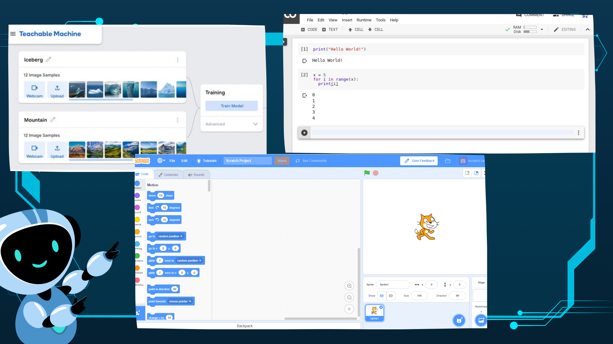

Selamat datang di jantung dunia Kecerdasan Artifisial (KA)! Modul ini akan membekali Anda dengan pengetahuan dan keterampilan untuk memprogram aplikasi cerdas. Anda akan memahami konsep dasar pemrograman KA dan bagaimana menerapkan library populer untuk mewujudkan ide-ide inovatif Anda.
Kita akan menjelajahi berbagai pendekatan AI seperti Machine Learning (ML), Deep Learning, Natural Language Processing (NLP), hingga Large Language Model (LLM). Bayangkan, Anda akan mampu membuat sistem yang bisa belajar dari data, mengenali pola, dan bahkan memahami bahasa manusia!
Modul ini juga akan memperkenalkan Anda pada konsep-konsep mutakhir seperti Edge AI untuk pemrosesan lokal, Emotion AI untuk interaksi yang lebih empatik, dan Reinforcement Learning yang memungkinkan sistem belajar dari pengalaman. Siap untuk menjadi pengembang AI masa depan?
Membuat sistem rekomendasi film sederhana. Dengan menggunakan algoritma Machine Learning, program dapat menganalisis preferensi tontonan pengguna dan merekomendasikan film lain yang mungkin disukai berdasarkan pola dari data pengguna lain.
Modul ini berfokus pada Pemrograman Kecerdasan Artifisial (KA). Peserta akan mempelajari konsep dasar pemrograman KA, cara menerapkan library KA populer untuk membangun aplikasi, serta memahami konsep, arsitektur, dan aplikasi Large Language Model (LLM). Modul ini juga mencakup berbagai pendekatan inovatif seperti Edge AI, Emotion AI, dan Reinforcement Learning, serta membahas Machine Learning, Deep Learning, dan Natural Language Processing (NLP) sebagai fondasi KA. Selain itu, dijelaskan pula penggunaan bahasa pemrograman seperti JavaScript (dengan Node.js) dan bahasa lainnya untuk integrasi LLM.